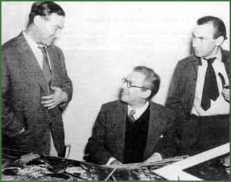

Sándor Korda – Sir Alexander Korda (Kellner) (1893–1956), film director, editor of film magazines, founder of London Film Ltd; Zoltán Korda (1895–1961) – film director and producer; Vince Korda (1897–1979) – painter and stage designer.